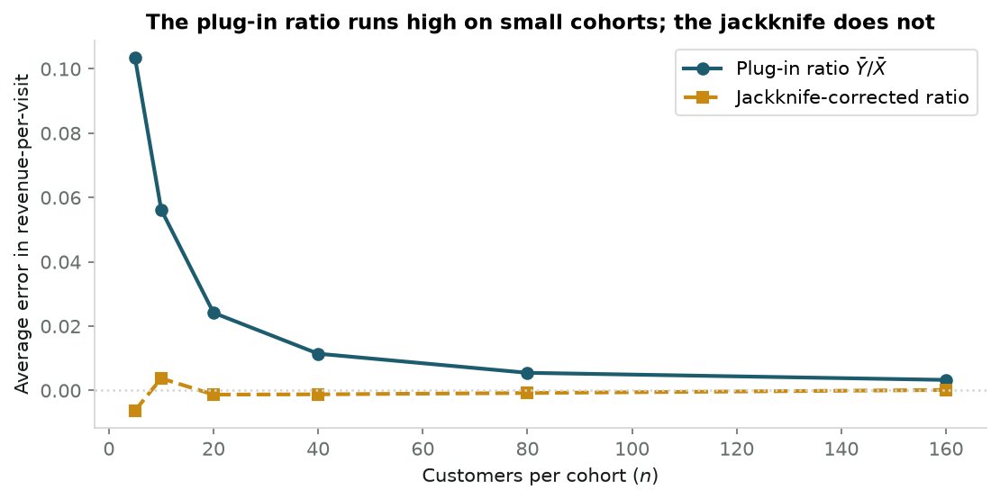

Leave out one observation at a time and a small-sample estimate stops lying to you. The same n passes that cancel its bias also name the single data point holding the answer up — a fraud ring’s hub, a fragile drug target, a censored retention curve.
Quenouille’s bias eraser and Tukey’s pseudovalues, worked through four examples: ratio bias in small cohorts, promo-abuse syndicates, censored survival regression, and clinical biomarker stability — with interactive widgets that run in the browser.
Statistics
Resampling
Growth-Engineering
Bioinformatics
Python
Author
Ravi Kalia
Published
August 18, 2026
You compute a number from a handful of data points — revenue per visit for last month’s cohort, the fold-change of a gene between tumour and healthy tissue — and you write it into a deck as though it were the answer. Usually it isn’t, and the interesting part is that it is wrong in a direction you could have worked out in advance. Divide average revenue by average visits over five customers and the result comes out too high. Draw a fresh five customers and it comes out too high again. The error is not noise that averages away; it is a systematic tilt built into the arithmetic of dividing one estimate by another.
There is a second, sharper problem hiding underneath. One concealed outlier — a bot account, a mishandled tissue sample — can carry an estimate almost by itself, and nothing in the number tells you that. Teams greenlight unprofitable acquisition channels and commit years of laboratory budget to drug targets that rest on a single patient.
The modern answer to both is the bootstrap: draw thousands of random resamples and watch the estimate wobble. But decades before a computer could hold ten thousand artificial worlds in memory, Maurice Quenouille and John Tukey found a deterministic shortcut. Perturb the dataset by leaving out exactly one observation at a time. Doing that \(n\) times cancels the leading systematic error, and — this is Tukey’s contribution — the \(n\) leftover quantities turn out to be a per-observation ledger of who moved the answer and by how much. No random numbers, no seed, no tuning.
What is in a name?
In 1958, John Tukey named the method after the pocket jackknife. It is not a surgeon’s scalpel, sharpened for one known parametric distribution. It is the rough all-purpose blade you carry anyway, and it handles most of what you meet in the field.
A ratio computed from five customers comes out systematically too high
Start with the simplest estimator that misbehaves: a ratio of two averages. Suppose you want revenue per visit for a cohort — total revenue divided by total visits, or equivalently average revenue divided by average visits. Each average is individually unbiased. Their ratio is not, because dividing is a curved operation: the denominator’s random wobble hurts you more when it lands low than it helps when it lands high, and the two do not cancel. The distortion is largest when the cohort is small, which is exactly when someone is trying to read an early signal from it.
The data below is simulated, and it has to be. To measure a bias you need to know the true value being missed, and no real dataset hands you that. So we generate customers from a known process: weekly visits per customer as a Gamma draw with mean 10, and weekly revenue as an independent Gamma draw with mean 25. The true revenue-per-visit is therefore exactly 2.50 by construction. Gamma is the right stand-in because both quantities are positive and right-skewed the way real spend and engagement counts are, and drawing revenue independently of visits reflects the ordinary case where a customer’s spend is not simply proportional to how often they show up. The decision downstream is budget: revenue-per-visit feeds payback horizons, so a metric that reads high on small cohorts systematically flatters new channels and keeps money flowing to ones that never pay back.
We run 50,000 synthetic cohorts at each size and record how far the average estimate sits from 2.50 — once for the plug-in ratio, once for its jackknife correction.
Code
# Synthetic cohorts: visits ~ Gamma(mean 10), revenue ~ Gamma(mean 25), drawn independently,# so revenue-per-visit is exactly 2.50 and any departure from it is bias, not noise.np.random.seed(42)true_mu_x, true_mu_y =10.0, 25.0true_ratio = true_mu_y / true_mu_x # exactly 2.50sample_sizes = [5, 10, 20, 40, 80, 160]n_sims =50_000plugin_biases = []jackknife_biases = []for n in sample_sizes: x = np.random.gamma(shape=5.0, scale=2.0, size=(n_sims, n)) # visits, mean 10 y = np.random.gamma(shape=5.0, scale=5.0, size=(n_sims, n)) # revenue, mean 25# Plug-in estimate: ratio of the two sample means plugin_est = np.mean(y, axis=1) / np.mean(x, axis=1) plugin_biases.append(np.mean(plugin_est) - true_ratio)# Leave-one-out: recompute the ratio n times, each time dropping one customer sum_x = np.sum(x, axis=1, keepdims=True) sum_y = np.sum(y, axis=1, keepdims=True) r_i = ((sum_y - y) / (n -1)) / ((sum_x - x) / (n -1)) r_bar = np.mean(r_i, axis=1)# Quenouille's recombination jack_est = n * plugin_est - (n -1) * r_bar jackknife_biases.append(np.mean(jack_est) - true_ratio)fig, ax = plt.subplots(figsize=(7.5, 3.8))ax.plot(sample_sizes, plugin_biases, "o-", color=PRIMARY, lw=2, label="Plug-in ratio $\\bar{Y}/\\bar{X}$")ax.plot(sample_sizes, jackknife_biases, "s--", color=SECONDARY, lw=2, label="Jackknife-corrected ratio")ax.axhline(0, color=RULE, ls=":", lw=1.2)ax.set_xlabel("Customers per cohort ($n$)")ax.set_ylabel("Average error in revenue-per-visit")ax.set_title("The plug-in ratio runs high on small cohorts; the jackknife does not")ax.legend(frameon=True, facecolor="white", edgecolor=RULE)plt.tight_layout()plt.show()for n, pb, jb inzip(sample_sizes, plugin_biases, jackknife_biases):print(f"n = {n:3d} plug-in error {pb:+.4f} jackknife error {jb:+.4f}")

n = 5 plug-in error +0.1034 jackknife error -0.0062
n = 10 plug-in error +0.0562 jackknife error +0.0038
n = 20 plug-in error +0.0241 jackknife error -0.0013
n = 40 plug-in error +0.0114 jackknife error -0.0012
n = 80 plug-in error +0.0055 jackknife error -0.0008
n = 160 plug-in error +0.0033 jackknife error +0.0001
At five customers the plug-in ratio reads about +0.10 too high — a 4% overstatement of a metric people budget against. Double the cohort to ten and the error roughly halves to +0.056; double again and it halves again. That halving is the signature to remember: the error shrinks like \(1/n\), so it is invisible at \(n = 100{,}000\) and dominant at \(n = 20\). Statisticians call it the \(O(1/n)\) bias term. The jackknife line, meanwhile, sits within 0.007 of zero at every cohort size, including the smallest — it has removed the entire \(1/n\) term and left only what decays faster.
That is the empirical claim. The next section is why the recombination n * plugin - (n-1) * r_bar does it.
Quenouille’s trick cancels the leading error term
Quenouille’s observation in 1949 was almost embarrassingly simple. Drop one point from a sample of \(n\) and what remains is a perfectly good sample of size \(n-1\). It suffers from the same kind of bias — same cause, same formula — just very slightly more of it, because it is one observation smaller.
So you have the same unknown error appearing twice, at two known strengths. Two equations, one nuisance. Weight them so the nuisance subtracts out. Averaging the \(n\) leave-one-out estimates into \(\bar{\theta}_{(\cdot)}\) and combining gives the jackknife estimator:
Read it as an extrapolation rather than a formula. You have the estimate at sample size \(n\) and the estimate at sample size \(n-1\); you can see which way the answer is drifting as the sample grows, so you step one notch further in that direction. The \(1/n\) error is gone; what survives shrinks like \(1/n^2\), which is why the jackknife line above was flat rather than merely lower.
The two-line cancellation, for the curious
For almost any smooth non-linear statistic, the expectation admits an asymptotic expansion in powers of \(1/n\):
Multiply the first by \(n\), the second by \(n-1\), and subtract. The \(\theta\) terms leave one copy behind, and the \(a\) terms — now \(a\) and \(a\) exactly — annihilate:
The constant \(a\) never had to be known. That is the whole point: the correction is arithmetic on estimates you already computed, not an analysis of the particular statistic in front of you.
Bias is only half the problem, though. A corrected point estimate with no sense of its own uncertainty is still a number you cannot act on. Tukey’s move was to notice that the same \(n\) leave-one-out fits were already carrying that information.
Tukey turns one estimate into \(n\) per-observation fingerprints
Quenouille’s formula averages the leave-one-out estimates and then recombines. Tukey rearranged it so the recombination happens first, once per observation. For each point \(i\), define its pseudovalue:
\[J_i = n \hat{\theta}_n - (n-1)\hat{\theta}_{(i)}\]
and the jackknife estimate is just their average, \(\hat{\theta}_{\text{jack}} = \frac{1}{n}\sum_i J_i\).
The rearrangement looks cosmetic and is not. Think of \(J_i\) as the answer you would be forced to report if observation \(i\) were the only thing distinguishing this sample from a sample without it — the estimate with that point’s entire contribution amplified out of the average. A point that changes nothing when removed gets a pseudovalue sitting right on the overall estimate. A point that props the whole thing up gets a pseudovalue flung far away from it. Subtract the overall estimate and what remains, \(J_i - \hat{\theta}_{\text{jack}}\), is that observation’s fingerprint on the answer.
Tukey’s real claim was stronger: for smooth statistics those \(n\) fingerprints behave like \(n\) independent draws from a single distribution. That is a surprising thing to get for free, and it is what licenses treating them as ordinary data. In particular, their scatter estimates the estimator’s own variance:
with \(\text{SE}_{\text{jack}} = \sqrt{v_{\text{jack}}}\), and a confidence interval follows the ordinary way, \(\hat{\theta}_{\text{jack}} \pm t_{n-1,\,\alpha/2}\cdot\text{SE}_{\text{jack}}\). No distributional assumption about the data went into that — only smoothness of the statistic.
Why the fingerprints are independent: the influence function
Von Mises’ statistical calculus expands any smooth functional \(T\) of the empirical distribution \(F_n\) around the population distribution \(F\):
where \(L(x; F)\) is the influence function — the derivative of the functional when you nudge an infinitesimal point mass onto \(x\). It measures the effect of a single observation on the estimate, in the limit.
Deleting \(X_i\) removes exactly that point’s term from the sum:
The pseudovalues are the influence function evaluated at each observation, offset by a constant. The \(X_i\) are i.i.d., so the \(L(X_i; F)\) are i.i.d., and the sample variance of an i.i.d. mean is the familiar \(\frac{1}{n}\text{Var}(L(X))\) — which is the variance formula above. The approximation is exactly where the smoothness assumption enters, and it is exactly what fails for the median later on.
Before the applications, it helps to have handled the objects directly. The lab below is a scatter of twelve points whose statistic you can watch respond: drag a point, add one, delete one, and the bar chart beside it recomputes every pseudovalue. Drag a point out toward the edge and watch its own bar grow while the others barely stir — that asymmetry, one bar dwarfing the rest, is the shape you will be looking for in all three applications that follow.
The theory is now in place: bias cancellation from Quenouille, per-observation influence and variance from Tukey. The next three sections put it against problems where the alternative tools genuinely struggle.
In growth systems, jackknife influence catches fraud rings that averages hide
Consumer fintech and marketplace apps run referral programmes: recruit a friend, and both of you get $20 in credit. Growth teams watch the promo-to-spend ratio — total credits handed out across a cohort, divided by the real revenue those customers subsequently generated. It is the same shape of statistic as the revenue-per-visit ratio above, and it inherits the same small-sample tilt, but here the more urgent question is different: when a referral cluster’s ratio looks bad, which account made it bad?
Organised abuse runs hub-and-spoke. One coordinating account registers dozens of throwaway phone numbers and device fingerprints, collects a referral bonus for each, and none of the spokes ever spends a cent. The obvious detector — flag accounts with zero post-promo spend — finds the spokes. It cannot find the hub, because the hub does spend a little, which is the entire reason it was set up that way.
The jackknife asks a different question of each account: how much better would this cohort’s economics look if this account had never joined? That reframing is what catches the hub, because the hub’s cost is not its own $20. It is the $20 it collected plus a $20 credit for each spoke it recruited — money the programme paid out because that account existed. Charging each account for the credits it caused is not a modelling trick; it is what the referral programme’s own terms already say.
The cluster below is simulated, and would have to be: real referral-abuse data is confidential by nature and the ground truth of who coordinated what is precisely what nobody has. So we construct eight genuine customers with one to five real referrals each and ordinary spend, one ringleader recruiting seven synthetic spokes and spending $5, and the seven spokes spending nothing. The point of simulating is that we know who the hub is and can check whether the method finds it. Getting this wrong in production costs in both directions: miss the hub and the syndicate keeps farming credits, ban the wrong accounts and you have terminated paying customers on a statistic.
Code
# Simulated referral cluster: 8 genuine customers, 1 coordinating hub, 7 synthetic spokes.# Each account is charged its own signup credit plus one credit per referee it recruited.np.random.seed(101)BONUS =20legit_referrals = [3, 2, 4, 1, 2, 5, 1, 3]accounts = [ {"name": f"Legit User {i+1}", "referrals": r,"spend": int(np.random.randint(100, 300)), "is_hub": False}for i, r inenumerate(legit_referrals)]accounts.append({"name": "Syndicate Ringleader", "referrals": 7, "spend": 5, "is_hub": True})for j inrange(7): accounts.append({"name": f"Synthetic Bot {j+1}", "referrals": 0, "spend": 0, "is_hub": False})df_fraud = pd.DataFrame(accounts)df_fraud["promo"] = BONUS * (1+ df_fraud["referrals"])n_users =len(df_fraud)cluster_r = df_fraud["promo"].sum() / df_fraud["spend"].sum()# Leave-one-out: recompute the cohort ratio with each account removed in turndf_fraud["sub_r"] = [ df_fraud.drop(index=i)["promo"].sum() / df_fraud.drop(index=i)["spend"].sum()for i inrange(n_users)]df_fraud["influence"] = cluster_r - df_fraud["sub_r"]df_fraud["pseudovalue"] = n_users * cluster_r - (n_users -1) * df_fraud["sub_r"]top_culprits = df_fraud.sort_values(by="influence", ascending=False).head(5)fig, ax = plt.subplots(figsize=(8, 3.8))colors = [DANGER if is_hub else PRIMARY for is_hub in top_culprits["is_hub"]]bars = ax.barh(top_culprits["name"], top_culprits["influence"], color=colors, height=0.6)ax.set_xlabel("Improvement in cohort promo-to-spend ratio if this account were removed")ax.set_title("Top accounts distorting cohort unit economics")ax.invert_yaxis()for bar, val inzip(bars, top_culprits["influence"]): ax.text(val +0.002, bar.get_y() + bar.get_height()/2, f"+{val:.3f}", va="center", fontsize=9, color=INK)plt.tight_layout()plt.show()print(f"Cohort promo-to-spend ratio: {cluster_r:.3f}")print(f"Ringleader leverage: {df_fraud.loc[df_fraud.is_hub, 'influence'].item():.4f}")print(f"Each spoke's leverage: {df_fraud.loc[df_fraud.name.str.startswith('Synthetic'), 'influence'].iloc[0]:.4f}")
The cohort burns $0.618 of credit per dollar of revenue, which is bad but tells you nothing about who. The leave-one-out pass does. Removing the ringleader improves the ratio by 0.111; removing any single spoke improves it by 0.014, and all seven spokes score identically because they are identical. The hub sits roughly eight times above the next account, alone at the top of a chart otherwise made of ties — the one-bar-dwarfing-the-rest shape from Lab 1, arriving in a real decision.
Notice what did the work. No graph neural network, no community detection, no labelled training set of known fraudsters. Sixteen recomputations of a ratio you were already computing.
The lab below lets you push on the assumptions. The promo-credit slider changes how much each signup is worth; the bot-node slider changes how many spokes the hub recruits, which also changes what the hub is charged. Drag the spoke count down toward zero and watch the hub’s lead collapse: at eight spokes it sits about nine times above the next account, at zero spokes barely twice. A hub with nothing to coordinate is just a slightly stingy customer, and the jackknife correctly stops shouting about it.
Interactive Lab 2: The Referral Syndicate UnmaskerSimulation
Both examples so far have jackknifed a ratio — a statistic you could write down in closed form and, with effort, differentiate by hand. The next one cannot be written down that way at all.
In cohort survival, pseudovalues turn censored curves into ordinary regressions
Ask how long a subscription cohort stays active and you hit a wall immediately: for most customers you do not know. They signed up recently and are still subscribed, so all you know is that their lifetime exceeds however long you have been watching. That is right-censoring, and it rules out simply averaging the observed durations — the customers who look shortest-lived are often just the ones who joined last week.
The standard summary that survives censoring is the area under the retention curve up to a fixed horizon: the average number of days a customer stays active during, say, their first year, counting a customer who is still active at day 365 as a full 365. Statisticians call it restricted mean survival time, and it has the useful property of being a real quantity in days rather than a hazard ratio nobody can interpret in a planning meeting.
The wall is that it is a property of the whole cohort’s curve, not of any one customer. You get one number for the cohort. You cannot regress it on acquisition channel or discount depth to ask which lever moves it, because there is no per-customer response variable to put on the left-hand side — the censored customers have no usable duration, and the uncensored ones are a biased subset.
Andersen and Perme’s insight (2010) is that Tukey already built the missing response variable. Compute the cohort’s restricted mean; then, for each customer, recompute it with that customer deleted and form their pseudovalue. That pseudovalue is a per-customer number, defined for censored and uncensored customers alike, whose average is the cohort figure and whose conditional expectation given the covariates is the thing you actually wanted to model. Regress it on whatever you like with ordinary least squares. The censoring problem was absorbed by the Kaplan–Meier curve one level down.
The cohort below is simulated for a reason that matters here: the whole claim is that the regression recovers the truth, and only a simulation has a truth to recover. Four hundred customers arrive on one of two channels, with a signup discount drawn uniformly between 0% and 40%. Their true lifetime is exponential with a mean that organic acquisition raises by 80 days and discounting lowers by up to 150 — so heavier discounting genuinely buys worse customers. Each is then observed for a uniformly random window between 60 and 365 days and censored there, mimicking a cohort where recent signups dominate. The decision this feeds is where acquisition budget goes, so the regression is only useful if its error bars are honest — which is why the code below prints a standard error beside every coefficient and the true value beside that.
Code
# Simulated subscription cohort, N=400, heavily right-censored.# True lifetime: Exponential(mean = 250 + 80*organic - 150*discount), observed through a# uniform 60-365 day window. Because the generating process is known, the regression can be# checked against the truth it is trying to recover.np.random.seed(55)n_cohort =400channels = np.random.binomial(1, 0.5, size=n_cohort) # 0 = Organic, 1 = Paid Searchdiscounts = np.random.uniform(0, 0.4, size=n_cohort)scale =250+80* (1- channels) -150* discountstrue_survival = np.random.exponential(scale=scale)censor_time = np.random.uniform(60, 365, size=n_cohort)observed_time = np.minimum(true_survival, censor_time)event_observed = (true_survival <= censor_time).astype(int)def calc_rmst(times, events, t_star=365):"""Area under the Kaplan-Meier curve out to t_star.""" order = np.argsort(times) t_sorted, e_sorted = times[order], events[order] n_k =len(times) s_t, rmst, prev_t =1.0, 0.0, 0.0for k inrange(n_k): cur_t =min(t_sorted[k], t_star)if cur_t > prev_t: rmst += s_t * (cur_t - prev_t) prev_t = cur_tif cur_t >= t_star:breakif e_sorted[k] ==1: s_t *= (1.0-1.0/ (n_k - k))if prev_t < t_star: rmst += s_t * (t_star - prev_t)return rmstcohort_rmst = calc_rmst(observed_time, event_observed)# One pseudovalue per customer: the cohort figure, re-levered by deleting that customerpseudo_rmst = np.array([ n_cohort * cohort_rmst- (n_cohort -1) * calc_rmst(np.delete(observed_time, i), np.delete(event_observed, i))for i inrange(n_cohort)])# Ordinary least squares on the pseudovalues, with robust (sandwich) standard errorsX_mat = np.column_stack([np.ones(n_cohort), channels, discounts])beta_hat = np.linalg.lstsq(X_mat, pseudo_rmst, rcond=None)[0]resid = pseudo_rmst - X_mat @ beta_hatXtX_inv = np.linalg.inv(X_mat.T @ X_mat)cov_hat = XtX_inv @ (X_mat.T @ (X_mat * resid[:, None] **2)) @ XtX_invse_hat = np.sqrt(np.diag(cov_hat))# The truth: each customer's exact restricted mean, best-fit by the same design matrixtrue_rmst_i = scale * (1- np.exp(-365/ scale))beta_true = np.linalg.lstsq(X_mat, true_rmst_i, rcond=None)[0]print(f"Cohort 365-day restricted mean: {cohort_rmst:.1f} active days\n")labels = ["Organic baseline (days)", "Paid Search effect (days)", "Full-discount effect (days)"]for name, b, s, t inzip(labels, beta_hat, se_hat, beta_true): lo, hi = b -1.96* s, b +1.96* s covered ="yes"if lo <= t <= hi else"NO"print(f"{name:<28}{b:8.1f} +/- {s:5.1f} 95% CI [{lo:7.1f}, {hi:7.1f}]"f" true {t:7.1f} covered: {covered}")
Every coefficient’s interval covers the value the simulation actually used. Paid-search customers are worth about 46 fewer active days in their first year, with a standard error of roughly 15 — against a true penalty of 33 days. Full-depth discounting costs around 77 days, but with a standard error near 64: on 400 customers the discount slope is barely distinguishable from zero, and the honest read is “we do not yet know.” That is a result too, and it is one the point estimate alone would have concealed. A team reading -77.4 off a slide would go and rebuild the discount ladder; a team reading -77.4 ± 64 would go and collect more data first.
What made all this possible is that a curve-level functional became 400 ordinary numbers. Every regression tool you already own works on them.
Caveat: the horizon must be inside the data
Restricted mean survival time is only estimable out to a horizon the observation window actually reaches. Here every customer is censored by day 365 at the latest, so the Kaplan–Meier curve is being read right at the edge of its support and the tail is effectively held flat. Push the horizon past the largest observed follow-up time and the estimate stops being non-parametric — it becomes an extrapolation with the flat-tail assumption doing the work. Pick \(t^*\) from the data you have, not the horizon you wish you had.
Both applications so far used the jackknife to find a number. The last one uses it to refuse one.
In clinical omics, leave-one-out variance stops multi-million dollar false targets
Early-phase oncology screening has an uncomfortable shape: thirty to sixty patients, twenty thousand genes. Every gene gets a score — typically the log-ratio of its average expression in tumour tissue against healthy tissue — and the top of that ranked list determines which targets get years of laboratory work behind them.
With only thirty patients, one patient can own a gene’s score outright. A mishandled sample, an undetected co-morbidity, a batch effect on one sequencing run: any of these can inflate one patient’s reading for one gene by an order of magnitude, and the average of thirty numbers cannot tell you it happened. The gene surfaces near the top of the list looking like a strong, clean signal.
The jackknife asks whether the score survives its own patients. Recompute the fold-change thirty times, each time with a different patient held out. If the signal is real, all thirty answers agree and the jackknife standard error is small. If one patient is carrying it, the run without that patient collapses, the standard error explodes, and the ratio of effect to standard error — call it a stability index — drops through the floor. It is the same \(|\text{estimate}| / \text{SE}\) shape as a t-statistic, but built from deletions rather than a distributional assumption, which matters at \(n = 30\).
The screen below is simulated because the alternative is not available: patient-level expression matrices are protected health information, and in any case a real screen would not tell us which of its hits are artifacts — that is the thing we want to demonstrate the method finding. So we plant both cases. CDK1 stands in for a genuine target, overexpressed by about 3.2 log-units consistently across all thirty patients. LINC009 stands in for a sample-prep artifact: essentially no signal in twenty-nine patients, and one enormous reading in patient 15, of the magnitude an RNA-seq count artifact actually produces. The spike is sized so the two genes look equally attractive on the naive score, which is precisely the situation that costs money.
On the naive score the artifact wins. LINC009 averages 3.12 log-units against CDK1’s 3.06, so a ranked list sorted by fold-change puts the artifact above the real target, and a team working down that list from the top reaches the wrong gene first.
The stability index inverts the ranking completely: 28.2 for CDK1 against 1.04 for LINC009. Read the two panels and you can see why. CDK1’s thirty points cluster tightly around their mean, so deleting any one of them barely moves it and the jackknife standard error is 0.11. LINC009’s panel looks almost empty by comparison, because a single point at 90 has stretched the axis until twenty-nine real measurements are squashed against the floor — and that visual is the finding, not a plotting defect. Delete patient 15 and the estimate falls to near zero; delete anyone else and it does not budge. That disagreement among the thirty leave-one-out runs is what the standard error of 3.00 is reporting.
A stability index near 1 says the effect and its uncertainty are the same size — the gene is one patient away from having no signal at all. That is a cheap filter to run over twenty thousand candidates before anyone orders reagents.
The lab below runs the screen over ten genes at once. The button injects the artifact patient and removes it again, so you can watch a single ranking flip: on the naive fold-change LINC009 climbs the list, and on the stability index it falls off it.
Three applications, three wins. But the smoothness assumption that has been quietly holding everything up is a real condition, and there is a familiar statistic that violates it outright.
The jackknife shatters on non-smooth statistics like the median
Everything above rested on one property: deleting a single observation nudges the estimate a little, in proportion to how unusual that observation was. That is what let the leave-one-out spread stand in for the sampling variance.
The sample median does not work like that. Sort the data and the median is whichever value sits in the middle — it is one of the observations, chosen by position rather than computed from all of them. Delete a point and the middle shifts by one slot, so the new median is the average of two adjacent central values. It makes no difference whether the point you deleted was the largest in the dataset or barely above the middle: the median moves by the gap between two neighbours near the centre, and by nothing else. Delete the most extreme observation you have and the median shrugs.
So the leave-one-out spread stops measuring influence. It measures the spacing of whichever two or three points happen to sit in the middle of this particular sample — an accident of one small neighbourhood of the data. Add more data and that neighbourhood gets tighter but never settles down, because it is always determined by a couple of order statistics rather than by all \(n\) points. The formal consequence is that the jackknife variance estimator for the median is inconsistent: as \(n \to \infty\) it does not converge to the true asymptotic variance at all, but to a random multiple of it — specifically a scaled chi-square with 2 degrees of freedom, which is to say it keeps rattling around forever. It is not merely imprecise. It is wrong, and collecting more data does not fix it.
The lab below puts the two side by side on the same eleven points. Switch between mean and median and watch the leave-one-out values: for the mean they fan out smoothly, each point displaced in proportion to its distance from centre. For the median they collapse onto two or three repeated values, and the point out at 9.8 — visibly the most extreme in the sample — gets a pseudovalue indistinguishable from its neighbours’.
Interactive Lab 4: Smooth vs. Non-Smooth Stress TestDiagnostic
The remedy: delete more than one
Wu (1986) and Shao and Wu (1989) traced the failure to its cause. Deleting one point moves the median by exactly one slot, which is a discrete jump, so no amount of averaging smooths it. Delete \(d\) points at a time instead and the median can land anywhere in a whole neighbourhood of order statistics, and averaging over many such deletions does smooth it.
The condition is that \(d\) must grow with \(n\) but stay a vanishing fraction of it — large enough that the deletions genuinely mix, small enough that each retained subsample still resembles the full one. In practice \(d \approx \sqrt{n}\) satisfies both. This is the delete-\(d\) jackknife, and it restores consistency for medians, quantiles, and the other order-statistic-based estimators that break the ordinary version. The cost is that you are back to sampling subsets rather than making \(n\) deterministic passes — which is to say, back in the bootstrap’s territory.
Jackknife or bootstrap: deterministic speed against stochastic generality
Both methods resample the data you already have rather than assuming a distribution for it. They differ in what they buy with it.
The jackknife
Efron’s bootstrap
Cost
Deterministic: exactly \(n\) passes, same answer every run
Stochastic: \(B \ge 1{,}000\) draws, plus a seed to record
Smooth statistics (means, ratios, GLMs)
Removes the \(1/n\) bias outright; no simulation noise
Accurate, but adds Monte Carlo noise of your own making
Non-smooth statistics (median, quantiles)
Fails; needs delete-\(d\)
Works unmodified
Per-observation diagnostics
Free: the pseudovalues are the influence estimates
Needs a secondary regression on resampling weights
Setup
None: no tuning, no seed, no reproducibility caveat
Choose \(B\), fix the seed, record both
The honest summary is that the bootstrap is more general and the jackknife is more informative when it applies. On a smooth statistic they will agree on the standard error; only one of them also hands you a ranked list of which observations produced it.
When to reach for the jackknife in your pocket
The claim at the top was that leaving out one observation at a time fixes a predictable error and, in the same \(n\) passes, tells you which observation is holding your answer up. All four examples were the same two lines of arithmetic applied to different estimators.
The bias correction earned its keep on cohorts of five, where the plug-in ratio ran 4% high and the correction removed essentially all of it — and it becomes irrelevant by the time \(n\) reaches the thousands, which is the honest limit of that half. The influence half does not fade with sample size, because “which single observation is this resting on” is a question about leverage rather than about \(n\): it found the hub of a referral syndicate that a zero-spend filter structurally could not see, and it demoted a biomarker that outranked a genuine target on the naive score. In between, pseudovalues turned a censored survival curve into 400 ordinary regression rows and, more usefully, into error bars wide enough to stop a decision.
Where it stops holding is precise, and worth carrying alongside the method: the statistic has to be smooth. If it is a median, a quantile, or anything else that reads a value off a sorted position, the ordinary jackknife’s variance estimate is not merely noisy but inconsistent, and you want delete-\(d\) or the bootstrap instead.
For everything else — every ratio, every rate, every curve functional, every model coefficient — you do not need ten thousand simulated universes. You need \(n\) passes and a subtraction.